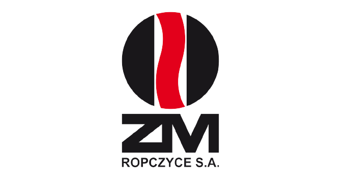

<mat-toolbar color="primary">
  <div class="btns">

    <ng-container *ngIf="user$ | async as user">
      <button mat-button (click)="logout()">Wyloguj</button>
      <button mat-button [routerLink]=" ['cases','list']">Lista zgłoszeń</button>
      <button mat-button [routerLink]="['case','new']">Nowe zgłoszenie</button>
      <button mat-button> {{user.name}}</button>

    </ng-container>


  </div>
  

</mat-toolbar>

<router-outlet></router-outlet>
